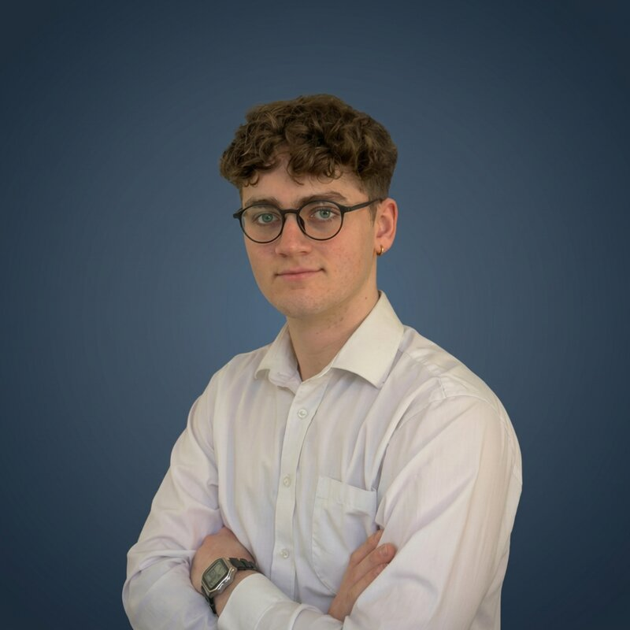

Sam Struthers
I want to understand how a set of formulas can learn, and then act on the world.

Understanding the methods, not just applying them.
I took an online course on Q-learning at 14. The idea that a set of formulas could produce something that learns, and then acts on the world, is what pulled me into the field. I wanted to understand why it worked.
That led to a BSc in Computing Science at Radboud University (Data Science and Software Science specialisation, AI minor), where I also worked as a teaching assistant on four courses. I'm now at TU/e Eindhoven for an MSc in Data Science & AI.
Outside coursework I design and publish functional 3D-printed parts. It's the same instinct pointed at physical objects: find a real problem, then build the thing that solves it. Longer term, the overlap between AI and physical engineering is where I'd most like to work.
Bachelor's thesis
Dynamic full-text indexing on lakehouse storage
A full-text search index built on DuckDB and the DuckLake lakehouse format, with BM25 ranking executed entirely in SQL. Documents can be inserted, deleted and modified without re-indexing the corpus, and every change is an ACID transaction.
The thesis evaluates how DuckLake's merge-on-read strategy behaves under deletion-heavy workloads: query latency as delete files accumulate, and what maintenance costs to restore it. The aim was engineering groundwork for retrieval in AI systems at scale.
dict, docs and postings tables stored as Parquet.
Software
CPNpy
↗A desktop app for process mining and (coloured) Petri nets. Draw workflow nets and check soundness, discover models from event logs (α, Inductive and Heuristics Miner), run conformance checking, and simulate CPN Tools models. Built because CPN Tools is Windows-only; this runs natively on macOS, Windows and Linux with no Java.
Lucidfish
↗A chess coach that turns Stockfish lines into human strategic reasoning. Tactical and positional facts (pins, forks, threats) are extracted from the board first, then given to an LLM, and the commentary is fact-checked against the position before it is shown.
Sams3DSolutions
Functional parts designed in Fusion 360 and printed on a Bambu Lab P1S, then published openly on MakerWorld. Each one starts from a small, real annoyance.
Thread cone adapter
Lets domestic sewing machines take industrial thread cones. Tested on Pfaff, Juki and Brother machines.
248 downloadsBobbiNest
A parametric bobbin organiser, with a flexible TPU variant.
99 downloadsSanDisk SSD cable organiser
A cable organiser for the SanDisk Extreme Pro v2 portable SSD.
614 downloadsTPU saddle pad
A flexible TPU pad for the GIANT Contact Forward bike saddle.
418 downloadsOneBlade wall mount
A stick-on wall mount for the Philips OneBlade, now on version 2.
280+ downloadsErgonomic footrest
A 15° under-desk footrest built from two independent wedge frames.
42 downloadsEducation & teaching
MSc Data Science & Artificial Intelligence
Eindhoven University of Technology (TU/e). Current courses include process mining, survival analysis, and a research track in safe reinforcement learning.
BSc Computing Science
Radboud University, Nijmegen. Data Science and Software Science specialisation, minor in AI. Thesis on dynamic full-text indexing with DuckLake.
Teaching assistant
Radboud University. TA for four courses, including some outside my specialisation.